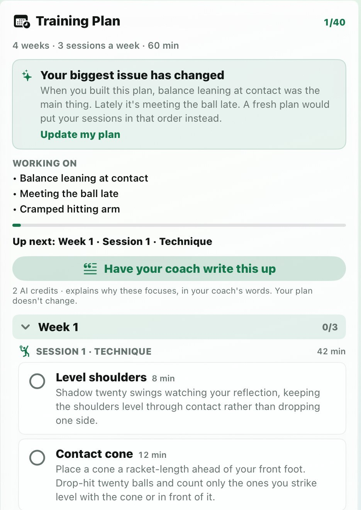
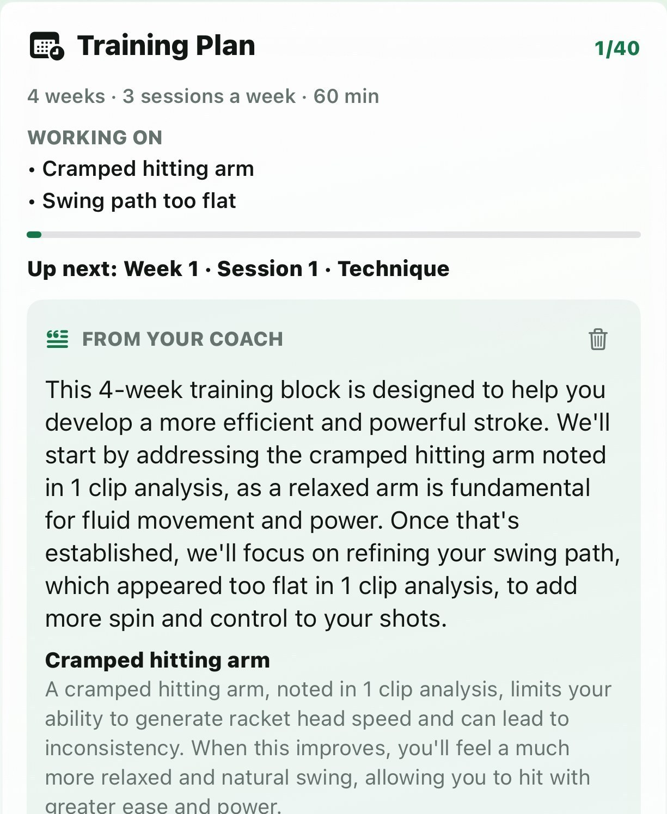
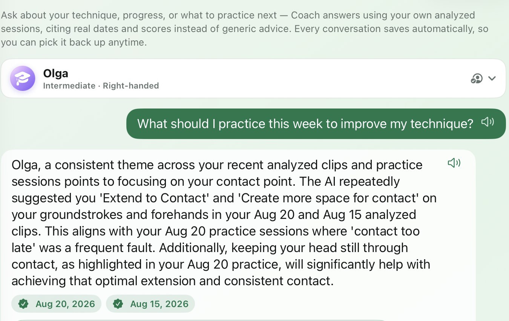
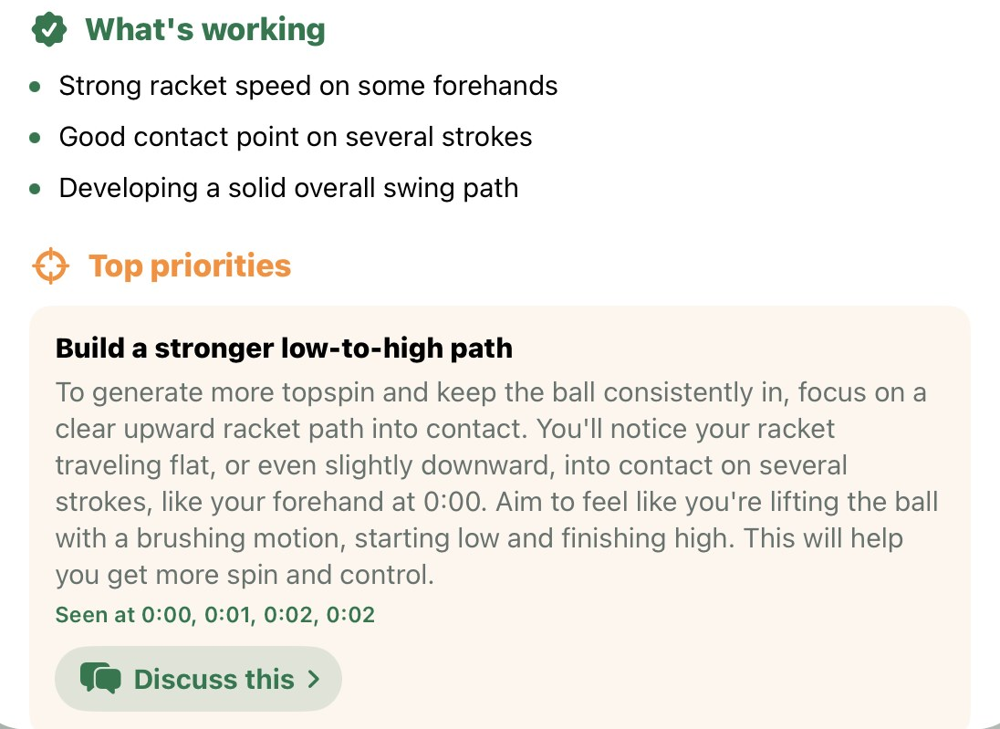
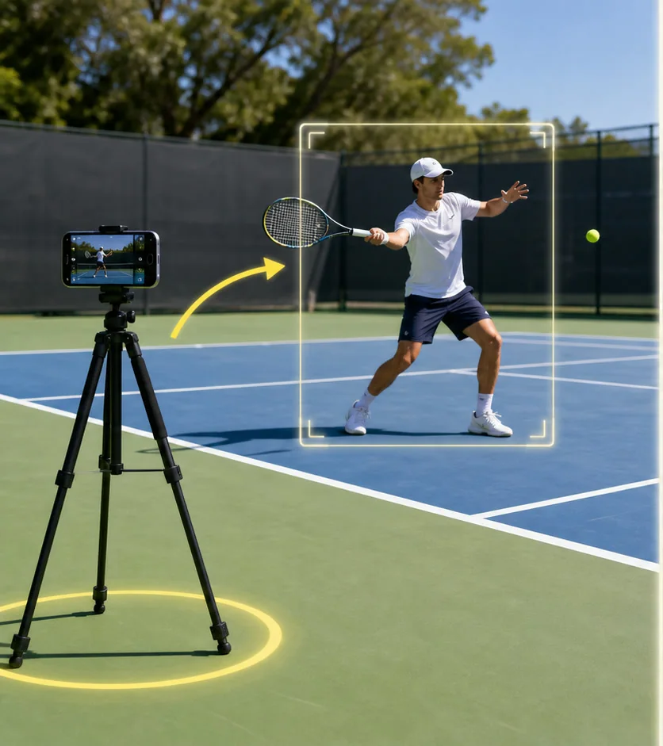
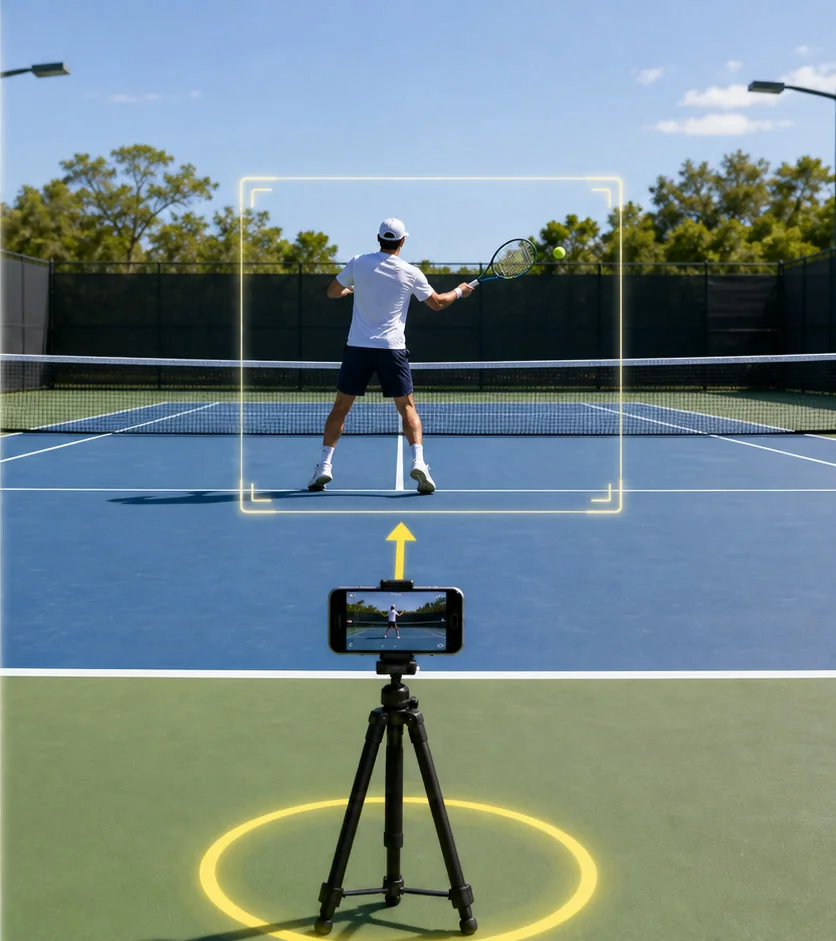

Rodrigo Echavarria took the live Visual Coach onto a clay court — hitting forehand after forehand while the app scored every swing and called out his balance in real time.
Kim of Rallies & Rackets took the app on court, then walked through her AI analysis — the "Fix of the Day" and coaching notes that showed her exactly what to work on next.
v2.0 — our own AI engine
We trained our own AI to watch your racket — and the ball.
Visual Coach is powered by our own Core ML engine — a custom object-detection model we trained on real tennis footage, running fully on-device alongside Apple's Vision body-pose skeleton. It tracks your racket and the ball through every swing, scores it, and coaches you out loud — real-time inference on your iPhone or iPad, no cloud required.
Racket & ball tracking
Our custom-trained Core ML detector locks onto your racket frame by frame — and traces the ball's flight as a live glowing trail. Both trails are adjustable right on court: toggle them, dial the intensity, and tune the detection confidence from Strict to Eager.
Swing scores & instant faults
Every swing gets a 0–100 score, and the exact fault is called out the moment it happens in your swing — "contact too late," "swing too slow," "finish too short" — so you know what to fix, not just that something was off.
Six premium coach voices
Every spoken cue is a studio-quality voice recording — not robotic text-to-speech. Choose from six coach personalities, from calm and encouraging to direct and energetic; it sounds like a real coach standing courtside. Leave the audio in when you share your clip.
Sample Elite Coach report
See what a deep AI analysis looks like.
Download a real 15-page Elite Coach sample report generated from a tennis clip. It shows the kind of structured feedback, scoring, improvement focus, visual checkpoints, and practice guidance the app can produce.
Real-time coaching on the court, and frame-by-frame breakdowns afterwards — both 100% free, unlimited, with no sign-up.
Visual Coach Live
Point your iPhone at the court for real-time coaching as you swing — a live skeleton tracks your form, joint angles and racket speed update at camera speed, and the coach speaks instant cues. On-device and private; nothing leaves your phone.
Visual Coach Replay
Record or upload a clip for a full breakdown — frame-by-frame skeleton overlay, a score for every swing, swing-phase checkpoints, and slow-mo you can loop on any contact point. Export the analyzed clip with voice to share — free.
Actual screen recording of Visual Coach on iPad — the skeleton overlay, racket tracking box, per-swing scores, fault callouts, and the coach's spoken cues are exactly what the app shows and says during a live or recorded session.
New in 2.4
Not just a score. A plan.
Knowing what is wrong with your forehand is only half of it. Tell the app how much time you actually have and it turns what it measured into a plan you can follow — week by week, drill by drill.
Built from your own faults
Choose your weeks, sessions a week, and minutes a session. The plan is built from the faults the app actually measured in your swing — ranked, with the evidence shown, drawing on both your Visual Coach sessions and your analyzed clips.
It tells you when your game moves on
If your recent sessions start pointing somewhere else, the app says so in plain words and leaves the call to you. Your plan never quietly rewrites itself while you are working through it.
Rebuilding keeps your progress
Start a fresh plan and the drills you have already ticked off come with you. Finish a block and the next one starts clean, because you meant to do those drills again.

Your plan, week by week · Built from measured faults

Optional: in your coach's words · Why these things, for you
The plan itself is free and works offline — no account, no credits. The written explanation is optional and costs credits; either way it never changes what the plan asks you to do. With nothing measured yet, the app says so and offers a foundation plan rather than pretending it knows your game.
Ask Coach
A coach that has actually watched you play.
Ask anything about your game and get an answer grounded in your own sessions — not generic tips scraped off the internet.
Grounded in your real sessions
Answers are built from your own analyzed clips and your Visual Coach practice reports — the actual swings the app measured. Ask why you keep framing your backhand and the coach answers from what it saw you do, naming the session it came from.
Tap “Discuss this” on any fault
Spotted a fault on a practice report or an analysis? Tap it and the question is asked for you, with the context already attached — no retyping what the app just measured.
Read aloud, and it remembers
Have answers spoken back to you between points, and pick the conversation up later — every player profile keeps its own coaching thread.

Answers cite your sessions · Real dates, real faults

Discuss this · Tap any fault to ask about it
Ask Coach uses 1 credit per question. If the coach hasn't seen enough of your game yet, it says so instead of inventing an answer.
Get started
Three steps to better tennis.
01
Record a short clip
Film from the side with the full player visible — shoes, shoulders, racket, contact, and finish inside the frame.
02
Run the AI analysis
Pick Forehand, Backhand, Serve, Volley — or Auto Detect for mixed clips — and get scores, checkpoints, and timestamps.
03
Practice one fix
Focus on a single Fix of the Day, then upload another clip from the same angle next week and watch the trend build.

Side view · Full body profile

Behind view · Behind baseline
First swing checklist
Record from the side. Use a tripod or fence mount and keep the full player visible.
Trim the best swing. Select the cleanest rally, serve, or stroke segment.
Run the right review. Use Quick Coach for one fix or Elite Coach for the deepest report.
Follow Fix of the Day. Practice one correction instead of chasing every detail.
Upload again next week. Use the same camera angle so progress is easier to compare.
Recording tips
Record from the side or behind
Side view helps contact and racket path. Behind view helps court position, recovery, and ball direction.
Keep body, racket, and ball visible
Shoes, shoulders, racket, ball contact, and follow-through should stay inside the frame.
Use clear light
Bright court light helps AI see timing, balance, contact point, and body position.
Film fast swings at 60fps
30fps works for most strokes. For hard serves and fast rallies, 60fps captures twice the frames at contact. Slow-motion modes (120/240fps) aren't needed.
Trim the best 20–90 seconds
Free clips use shorter analysis. Pro modes can review longer segments, but the cleanest moment still matters most.
Pick technique or Auto Detect
Choose Forehand, Backhand, Serve, or another technique when you know it. Use Auto Detect when the clip is mixed.
Understand scores and cues
Scores, levels, timestamps, and snapshots are coaching estimates that help you find what to fix next.
Use AI as coaching guidance
AI feedback can be wrong or incomplete. It is not medical advice, injury advice, or a guaranteed performance result.
On-device AI skeleton and racket tracking, live on court or over recorded clips. 100% free, unlimited, no sign-up.
Per-swing scores
Every swing scored 0–100 against pro-style benchmarks, with per-checkpoint breakdowns and NTRP-style level estimates.
Deep AI coaching reports
Quick Coach, Deep Review, and Elite Coach modes turn key frames into detailed reports with a practical Fix of the Day.
Ask Coach
Ask questions about your own game and get answers grounded in your real analyzed clips and practice reports — with "Discuss this" on any fault the app spots.
Clips, recordings & sharing
Export clean slow-motion swing clips with phase captions, or before/after comparisons of your progress — and screen-record Visual Coach sessions with the live trails and spoken cues baked in.
Player profiles & hub
Separate histories, personal bests, milestones, and training plans for every family member who uses the app.
Private by design
Videos, profiles, and reports stay on your device unless you share them. Only selected key frames go to the AI for analysis.
AI, privacy & credits
Honest about how it works.
What is sent
For AI analysis, the app sends selected key frames from your chosen clip range, clip timing, technique, player level, and analysis mode to the AI Tennis Swing Coach backend for Google Gemini AI analysis.
What stays local
The original imported video, local trimmed clip, player profiles, saved history, and generated reports are stored on the device unless you share or export them.
Credits
Free accounts include 3 AI credits, tied to your Apple account.
AI Tennis Swing Coach Pro includes 100 monthly credits.
Quick Coach uses 1 credit, Deep Review uses 2, and Elite Coach uses 3.
Ask Coach uses 1 credit per question.
AI feedback is coaching guidance only. It may be inaccurate or incomplete, especially with poor camera angle, low light, partial body visibility, or unclear contact. It is not medical advice, injury advice, a certified rating, or a guaranteed performance result.
FAQ
Quick answers.
What clip angle is best?
Start with side view. It gives the clearest look at contact point, racket drop, timing, and follow-through.
Can I analyze friends or family?
Yes. Use player profiles to keep histories and training plans separate. Make sure people agree to be recorded.